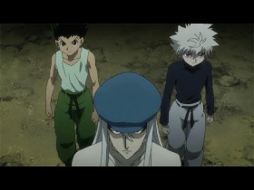

Gon Freecss
Aventureiro, otimista, amigo leal e um exìmio Hunter
Um garoto crescido na Ilha da Baleia que buscou com todas as suas forças ficar mais forte para que pudesse se tornar um verdadeiro Hunter. Envolveu-se em uma grande aventura em busca de seu pai, um hunter profissional, que deixou seu filho aos cuidados de sua irmã para que pudesse se dedicar á profissão.
Trajetòria de Gon Freecss
Gon ainda na Ilha da Baleia, local onde cresceu com sua tia.
Gon durante a primeira etapa do processo Hunter, onde precisou correr por um
longo percurso.
Gon durante a segunda etapa do processo Hunter, onde os candidatos deveriam pegar
ovos da àguia-aranha em um precipìcio.
Gon durante a terceira etapa do processo Hunter, onde os candidatos deveriam
escapar de uma prisão com tempo limite.

Gon durante a quarta etapa do processo Hunter, prova de sobrevivência em uma
floresta.
Gon durante a ùltima etapa do processo Hunter, um torneio entre os candidatos
restantes.
Gon durante os eventos em York Shin, onde enfrentou a Trupe Fantasma.
Gon durante os eventos em Greed Island, onde adentra ao jogo em que seu pai criou
e amplia suas habilidades.

Gon durante a saga das Chimera Ants, formigas que evoluiram de forma assustadora
e mataram Kaito, uma pessoa muito querida por ele.
Gon no hospital apòs as batalhas contra as Chimera Ants, apesar de seu estado ele
foi vitorioso.
Caso queira saber mais sobre a vida de Gon Freecss, por favor clique aqui.